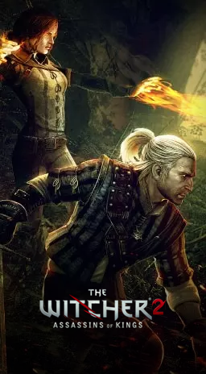
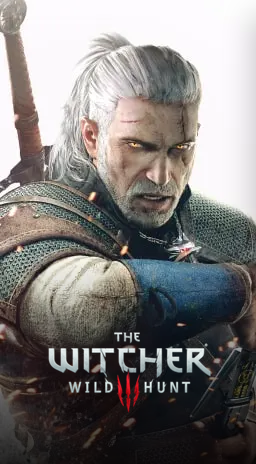
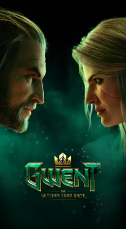

The Witcher 2: Assassins of Kings contém muitos caminhos e linhas de história diferentes, assim como múltiplos finais. Como no primeiro jogo, o jogador toma controle de Geralt de Rivia, um dos poucos bruxos (witchers) restantes. Bruxos são humanos geneticamente encantados e treinados para lutar contra monstros desde jovens. Eles possuem poderes especiais, divergindo para cada bruxo. Estes incluem alquimia, magia e manejo de espadas.

Ambientado em um gigantesco cenário medieval que dá liberdade total ao jogador, o game, que possui uma jogabilidade não linear e é jogado através de uma perspectiva em terceira pessoa, tem o lendário bruxo Geralt de Rívia como seu protagonista, o qual inicia uma longa jornada pelos Reinos do Norte.

Gwent é um jogo de cartas de turnos entre dois jogadores, onde cada partida é dividida em uma melhor de três rodadas. Cada jogador deve jogar uma carta por turno de seu baralho. O jogador com mais pontos no seu lado do tabuleiro ao final da rodada, vence a rodada. Vence o jogo o jogador que ganhar duas rodadas primeiro.